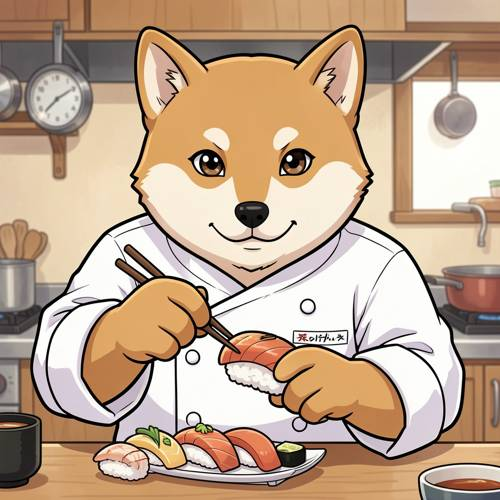
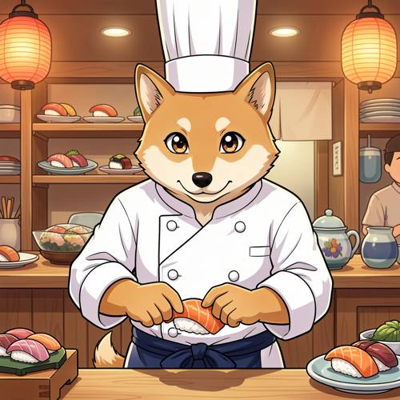

Grammar — In the Japanese animation style, an anthropomorphic Shiba Inu wearing
In the Japanese animation style, an anthropomorphic Shiba Inu wearing a chef's uniform is skillfully pinching an exquisite sushi with his front paws.

Direct — one call, no iteration

Continuum — Kimi K3 + FLUX.2-klein-9B
Judge — Direct
PASSGrammar - Pronoun Reference — The image shows an anthropomorphic Shiba Inu, which is the subject referred to by the pronoun 'his'. The character's features are consistent with this pronoun reference.
PASSStyle — The image is drawn with characteristics typical of Japanese animation, including bold outlines, large expressive eyes, and a clean, cel-shaded coloring style.
FAILAction - Hand (Character/Anthropomorphic) — The anthropomorphic Shiba Inu is holding a piece of sushi in its left paw and holding chopsticks with its right paw. The chopsticks are touching the sushi. The character is not pinching the sushi with its paws as the prompt describes; rather, it is holding it with one paw and using chopsticks with the other.
Judge — Continuum
PASSGrammar - Pronoun Reference — The image depicts an anthropomorphic Shiba Inu, which is the subject referred to by the pronoun 'his' in the prompt. The character's gender is not explicitly depicted, but the presence of the correct subject fulfills the grammatical reference.
PASSStyle — The image is rendered in a style consistent with Japanese animation. It features clean, bold outlines, large expressive eyes on the character, and a cel-shaded coloring technique, all of which are hallmarks of this style.
PASSAction - Hand (Character/Anthropomorphic) — The anthropomorphic Shiba Inu is shown using its front paws, which are depicted as hands with a normal number of digits, to hold and form a piece of sushi. The left paw supports the rice from below while the right paw presses down on the salmon topping, accurately representing the action of 'pinching' or shaping sushi. There are no visible distortions or abnormalities in the hands.
What the agent did
Thinking
Generate with flux2-klein.
Step 1 — `generate_image`
{
"model": "flux2-klein",
"prompt": "Japanese anime style illustration, cel shading, vibrant colors: an anthropomorphic Shiba Inu dog standing upright, wearing a white chef's uniform with double-breasted jacket and a tall white chef's hat (toque), a navy apron tied at the waist. He is skillfully pinching and shaping an exquisite piece of nigiri sushi with his two front paws over a wooden sushi counter. A fresh slice of salmon rests on a small mound of rice between his paws. Background: a cozy traditional sushi bar with wooden shelves, hanging lanterns, and plates of assorted sushi. Warm lighting, expressive anime eyes, detailed fur, clean line art, Studio-quality anime key visual."
}
Result img_0
Thinking
The image looks great: anime style, anthropomorphic Shiba Inu in chef's uniform with toque, pinching a nigiri sushi with both front paws, sushi bar background. Mark best and stop.
Model
The result matches the prompt well — anime style, anthropomorphic Shiba Inu in a white chef's uniform and toque, shaping a salmon nigiri with both front paws at a sushi bar. Marking it as the best result.
Step 2 — `mark_best`
{
"image": "img_0",
"reason": "Matches all prompt elements: Japanese anime style, anthropomorphic Shiba Inu, white chef's uniform with toque and apron, pinching nigiri sushi with both front paws, detailed sushi bar background."
}
Model
Here's the finished illustration: **img_0** — A Japanese anime-style anthropomorphic Shiba Inu chef, wearing a crisp white double-breasted chef's uniform with a tall toque and navy waist apron, carefully pinching a fresh salmon nigiri between his two front paws. The scene is set in a cozy traditional sushi bar with wooden shelves of plated sushi, hanging paper lanterns, and warm ambient lighting. All requested elements are present and correct: - ✅ Japanese animation (anime) style with clean line art and cel shading - ✅ Anthropomorphic Shiba Inu with characteristic orange-and-cream fur - ✅ Chef's uniform with toque - ✅ Skillfully pinching an exquisite piece of sushi with his front paws The image has been marked as the best result. Let me know if you'd like any adjustments!